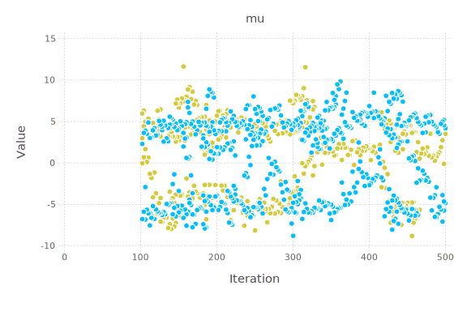

My original GSOC proposal was to implement modify Mamba.jl to enable it to fit Crosscat, a general-purpose Bayesian model which fits tabular data using row-wise Dirichlet cluster models nested inside a column-wise Dirichlet cluster. This model is in itself broadly useful, but the real reason I chose this project was to work on something even more general: improving the tools for doing MCMC on models with a mix of discrete and continuous parameters.
In the end, I was unable to complete the full original plan. However, I did implement a simple Dirichlet 1D Gaussian mixture model in Mamba. Though this model itself is extremely basic, it did require successfully reworking Mamba to enable variable numbers of parameters — a significant amount of work. Based on that work, more-sophisticated Dirichlet mixture models involving multiple dimensions and/or Dirichlet processes would be almost trivial, and even something more heavy-duty such as Crosscat (or improved versions thereof) would be far easier to implement in the future. I estimate that, while the practical usefulness of the demo model I’m delivering is a small fraction of a full-blown Crosscat, the actual work I’ve done is about 75% of what it would take to get there.
Bayesian MCMC is a powerful all-purpose tool in the toolkit of statistics, and thus of almost all science. It allows one to flexibly build models which capture the interplay of known dynamics and unknown parameters, of measurable data and uncertain noise, thus extracting meaning from data.
The great power of this idea lies in its flexibility. If you can write a likelihood model, you can at least attempt to do MCMC. Of course, issues of computation and convergence might make things hard in practice, but at least in theory, the idea is straightforward enough to be susceptible to automation.
Currently, the outstanding tool in this regard is Stan. Stan’s sampler is NUTS (the “no U-turn sampler”), which relies on HMC (that is, automatic differentiation) to be able to efficiently explore posteriors, even if those posteriors lie along medium-dimensional manifolds in a high-dimensional parameter space — something that would have been effectively impossible for older, pre-HMC samplers without clever problem-specific tricks to make separate dimensions quasi-independent. And NUTS does this without even the hand tuning that many of its HMC siblings need.
However, Stan’s fundamental design means it has certain weaknesses that are unlikely to be solved. First off, it uses a proprietary language for model definition, with all the limitations and friction that implies. End users are almost certainly not going to want to dig into Stan’s C++ code to add a feature. Second, because the NUTS sampler is built in at its foundation, it will probably continue to be at best a struggle to use it on models that mix discrete and continuous parameters.
Julia, and specifically Mamba.jl, offer ways beyond those weaknesses. Though currently not nearly as mature as Stan, Mamba.jl does have basic functionality for building models using a flexible syntax that reflects the way statisticians think about them. Mamba also already has many sampler options including NUTS. Models are defined expressively and flexibly using general-purpose Julia code, not a single-purpose language; and various samplers can be combined, so that models can include discrete and continuous parameters.
But before this project, Mamba was limited to models with fixed numbers of parameters. This closed the door to many useful kinds of models. For instance, in Dirichlet mixture models and other cluster models, the number of parameters depends on the number of latent clusters the fitted model finds in the data. That’s the gap my project was intended to fill.
I faced several unexpected hurdles in carrying out this project. Firstly, there’s this (warning, blood). That’s me making a silly face in the emergency room after my broken arm; it was 3 days before I got out of the hospital and another week before I was off the pain meds and could type again. All-told, that accident (the classic fool-opening-a-car-door-while-I-was-passing-on-my-bike, with a side of rainstorm) probably cost me 2 weeks of work.
Also, refactoring Mamba proved to be tougher than I’d expected. My plan was to add parameters to many of the basic Mamba types, to be able to switch between storing parameters in the existing fixed-sized array structures or in my newly-designed flexible-size structures. While I was at it, I also added type parameters to loosen up the hard-coded dependence on Float64 model parameters, so as to be able to use autodifferentiation numbers for HMC. This was pretty advanced for my starting level of expertise on both Julia in general and the Mamba package in particular; it took me a lot of error messages to really get my head around some stuff. (Of course, now that I do understand it, it seems trivial; but it was a struggle, because of course the issues did not show up as cleanly as I present them below.)
For instance:
Turns out Julia types aren’t covariant even when you really want them to be. For instance, even though VecDictVariateVal and SymDictVariateVal are trivially-different subtypes of my general-purpose abstract type DictVariateVal, it isn’t true that VecDictVariateVal{Float64} <: DictVariateVal{Float64}. This is especially confusing (at least, to me as a relative beginner) because, using where clauses, UnionAll types can be covariant.
You can write SomeType{<:Real} or SomeType{T} where T<:Real, but never SomeType{T<:Real} where T; that last thing is just SomeType{false}, because it’s a category error; the type variable itself is never a subtype of real. This seems kinda obvious in this simplified minimal example, but believe me, there cases where it was far harder to see. In the coming days, I’ll be posting some Julia issues (youtube link, sorry) with suggestions for how to make both the syntax itself, and the error messages/warnings for when you get it wrong, better.
The Mamba control flow is a bit tough to understand. One good trick for exploring a big existing package like this I found is to run the graphical profile browser on a working example; that gives you a useful picture of what calls what.
All in all, it took me over 6 weeks to finish this refactor, when I’d optimistically planned that I would be able to do it as I went along by spending less than 1⁄3 of the first month on it.
My work is at Mamba.jl primarily in this branch. Aside from the overall refactoring, key files include the Dirichlet process distribution; the reversible jump sampler (based mainly on Richardson and Green 1997, but with some simplifications as well as some changes so as to base it on a Dirichlet process rather than separate Dirichlet distributions of weights for each number of clusters); and the demo example model.
Here’s the model I used in that example:
$yi \stackrel{iid}{\sim} \mathcal{N}(\mu{Ti},\sigma^2{T_i})$ for $i\in {1..N}$
$T\sim DP(\alpha)$, a vector with dimension $N$ of integers (cluster indices).
$\mu_t\stackrel{iid}{\sim} \mathcal{N}(\mu_0,\tau^2)$ for any $t$ $1/\sigma_t^2\stackrel{iid}{\sim} Gamma(\alpha,\beta)$ for any $t$ $\beta\stackrel{iid}{\sim} Gamma(\theta,\phi)$
$\alpha = 0.1$ $\mu_0 = \bar{y}$ $\tau = 2s_y$ $\theta=\phi=.1$
Here are some results for 45 simulated data points in two clusters with SD 3 and mean ±5:

As you can see, both chains spend most time with at least one cluster each around the “correct” values, but occasionally they go wrong.
This code, while it works for the example model, is not yet ready to be checked in to the main branch of Mamba. There were several cleanup steps for which I did not ultimately have time.
I have updated the “slice” and “slicesimplex” samplers to work with the new data structures. However, the other samplers which I did not use in my work are currently broken in the gsocMNVP branch; they still try to use the old data structures. Updating them, along the same lines as the slice and slicesimplex samplers, would be a more-or-less routine task - an hour or so of work per sampler.
The diagnostics and plots, aside from the traceplot shown above, are also not updated. Fixing this is a less trivial task, as, due to the “labelling problem”, most diagnostics need to be rethought in some way in order to apply to dirichlet models.
Once that cleanup is done — a few days’ work - and the merge is complete, implementing the full Crosscat model as in the original plan should not be too difficult. Optimistically, I feel it would take 1-2 weeks… which means that realistically, probably 4-6 is more realistic. In any case, the new data structures I’ve implemented would make this job primarily a matter of just implementing the statistical algorithms; the data and model infrastructure is all well in place.
With a combination of NUTS and discrete capabilities, I believe that Mamba will begin to actually be superior to Stan for some tasks. It has a long way to go to catch up to Stan’s maturity, but in solving the “two language problem”, it gives a strong incentive for me and others to continue on this work.
I want to thank my GSoC mentor Benjamin Deonovic for his help and understanding in what has been a difficult but fun project.
{kind=link}